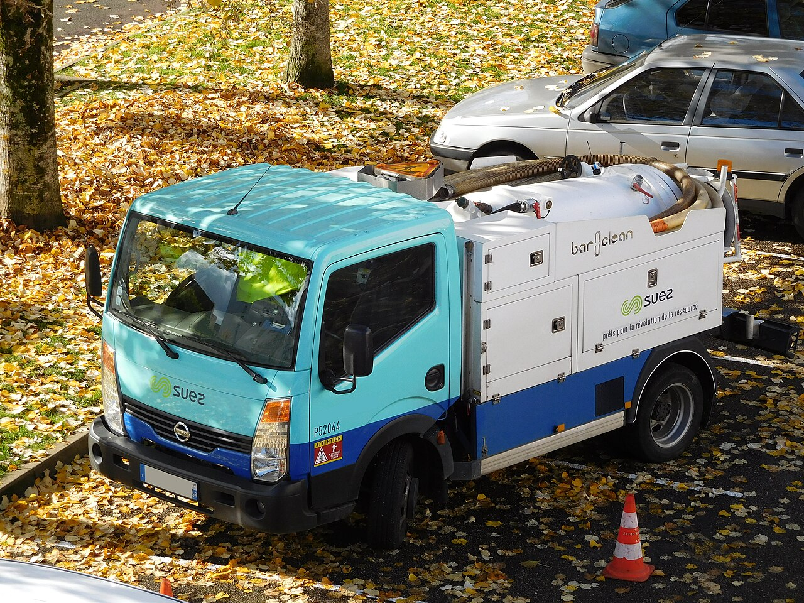
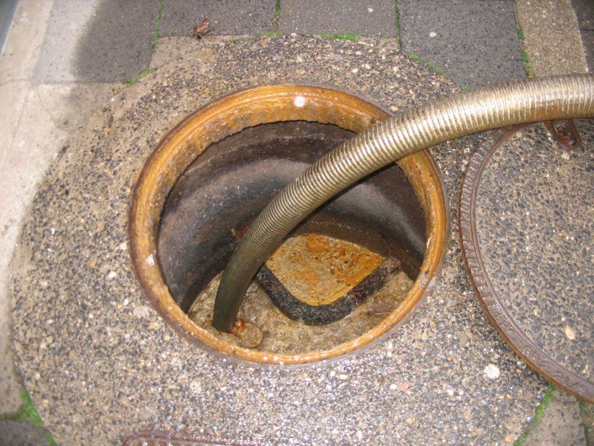

Altyapı sorunlarında 7/24 hızlı, temiz ve güvenilir çözüm.
Foseptik çekimi, kanal açma, logar temizliği ve tıkanıklık... Gece gündüz arayın, en yakın aracımız hemen yola çıksın.
Sorununuz ne?
Size uyanı seçin, doğru hizmete gidin.
Hizmetlerimiz
Vidanjör ve altyapı temizliğinde ihtiyacınız olan her şey.




Logar Tıkanıklığı Açma
Logar açma ve temizleme; rögar ve yağmur suyu hatları. Son teknoloji cihazlarla.
İncele →Yağ Tutucu Temizleme
Yağ tutucu çekme ve temizleme. Restoran, otel ve işletmelere düzenli bakım.
İncele →Nasıl Çalışıyoruz?
Üç adımda sorun çözülür.
Arayın ya da yazın
Sorunu ve adresinizi söyleyin. İsterseniz WhatsApp'tan fotoğraf gönderin.
Araç yola çıkar
İşe uygun aracı ve ekibi yönlendiririz, hemen adresinize geliyoruz.
Temiz teslim
Tıkanıklık açılır ya da çekim yapılır, alan temiz bırakılır.
Araç ve Cihazlarımız
Her işe uygun ekipman.
Vidanjör
Vakumlu tankıyla foseptik, logar ve yağ tutucu içindeki atığı çeker.
Kombine Kanal Açma Aracı
Basınçlı su ile hattı açar, aynı anda vakumla atığı çeker.
Kanal Açma Robotu
Dar borulardaki tıkanıklığı kırmadan dökmeden açar.
Kanal Kamerası
Borunun içini görüntüler, tıkanıklığın ve arızanın yerini gösterir.
Bölgelerimizden
Her ilçe için ayrı sayfa — Google'da "ilçe + vidanjör" aramalarında çıkmak için.
Muratpaşa'da 7/24 Foseptik Çukuru Çekimi ve Temizliği
Muratpaşa ve çevresinde konut ve iş yerleri için hızlı foseptik çekimi...
Devamını oku → Kepez · Kanal AçmaKepez'de Tıkalı Kanal Açma
Tuvalet, lavabo ve ana hat tıkanıklıklarında kırmadan dökmeden çözüm...
Devamını oku → Konyaaltı · Logar TemizliğiKonyaaltı'nda Logar ve Rögar Temizliği
Yağmur suyu hatları ve logarlarda taşma olmadan önce temizlik...
Devamını oku → Döşemealtı · Yağ TutucuDöşemealtı'nda Restoran ve Otel Yağ Tutucu Temizliği
Mutfak yağ hatları ve seperatörlerin düzenli temizliği...
Devamını oku →Sık Sorulan Sorular
Foseptik ne sıklıkla çekilmeli?
Kullanıma göre değişir; genelde 6–12 ayda bir önerilir.
Gece ve hafta sonu geliyor musunuz?
Evet, 7/24 hizmet veriyoruz.
Ne kadar sürede gelirsiniz?
Bölgeye göre değişir; aradığınızda varış süresini söyleriz.
Fiyatı nasıl öğrenirim?
Arayın ya da WhatsApp'tan fotoğraf gönderin, hemen bilgi verelim.
Bizimle hızlıca iletişime geçin
Arayın ya da WhatsApp'tan yazın, en yakın aracımızı yönlendirelim.
7 gün 24 saat açık